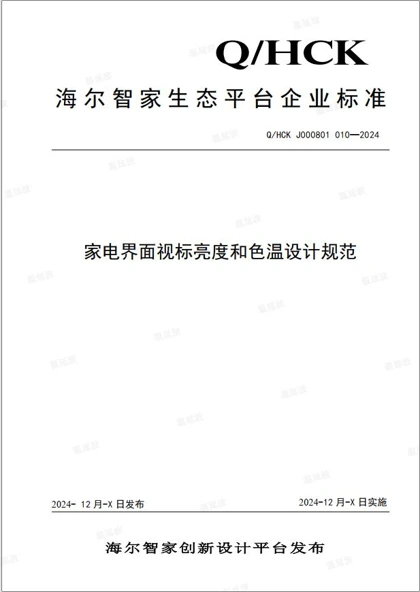
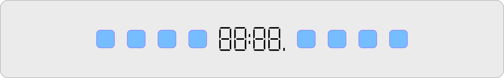
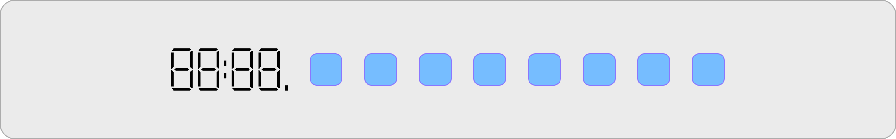

轮廓必须清晰
按键需具有可辨识的边界或独立亮灯区域，不把装饰图形当作操作边界。测试显示，明确轮廓能帮助用户快速定位控制区。
面向段码屏、盘膜/印刷按键与 LED 亮灯按键的设计规范。以真实硬件上的可识别、可触达和可理解为首要标准。
按键需具有可辨识的边界或独立亮灯区域，不把装饰图形当作操作边界。测试显示，明确轮廓能帮助用户快速定位控制区。
温度、预约等参数键必须提供清晰标签；首次使用或存在歧义时，使用图标与文字组合。
参数键属于低频操作，默认不使用持续高亮。仅在选中、编辑或反馈状态点亮。
启动键避免使用易被理解为“程序切换”的表达；采用独立的启动图标，并与程序选择区拉开距离。
企标号 Q/HCK J000801 010—2024

以下为真实成品上的可见尺寸，不是设计稿像素值；需在打样件上复核丝印、透光与观看距离。
| 内容类型 | 信息展示（非按键） | 作为按键 |
|---|---|---|
| 中文 | 字高 ≥ 3.5 mm | 字高 ≥ 4.5 mm |
| 数字 | 字高 ≥ 4 mm | 字高 ≥ 4.5 mm |
| 英文 | 字高 ≥ 3.5 mm | 字高 ≥ 4.5 mm |
| 写实彩色图标 | ≥ 5.5 mm | ≥ 8.5 mm |
| 彩色线性图标 | ≥ 5 mm | ≥ 7 mm |
| 单色线性图标 | ≥ 4.5 mm | ≥ 6 mm |
相邻按键中心间距
a ≥ 14 mm
保留足够的中心间距，防止误触发。
适用于仅配置 LED 与双八数码管的面板。
单个界面的核心功能按键总数不得超过 8 个，避免同层级选项过多。
空间不足时可使用两排，需保持明确的阅读与操作路径。

双八位于界面中心时，左右按键数量、间距与排列节奏需要保持对称。

双八位于左侧时，按键集中排列在右侧，并保持连续、清晰的单向操作路径。
✓ 按键边界在熄屏、点亮和强环境光下均可识别
✓ 文字与图标成品尺寸达到对应毫米下限
✓ 温度、预约等参数键含清晰标签
✓ 非选中低频参数键不持续高亮
✓ 电源、启动与程序切换的图标语义不混淆
✓ 电源默认位于右上，最终启动位于右下
✓ 按键间距、可触区域不小于控件实体范围
✓ 在真实面板材质、亮度、视距与主手操作下验证